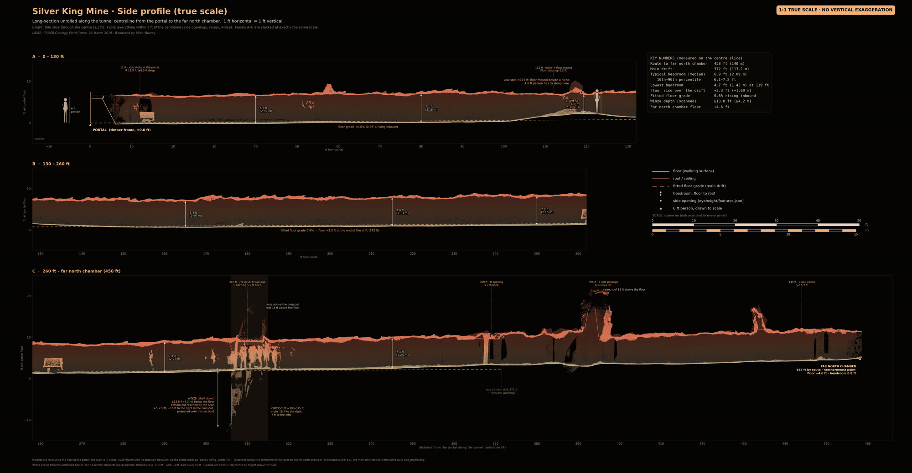
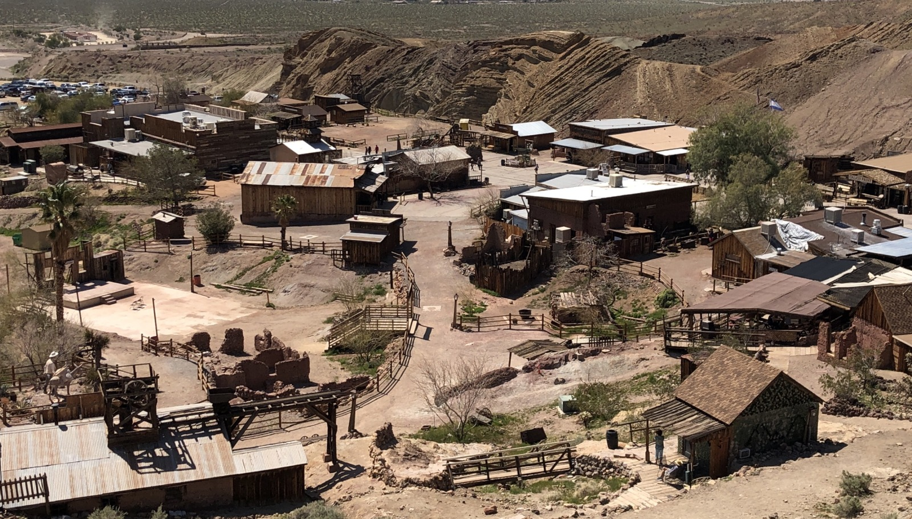
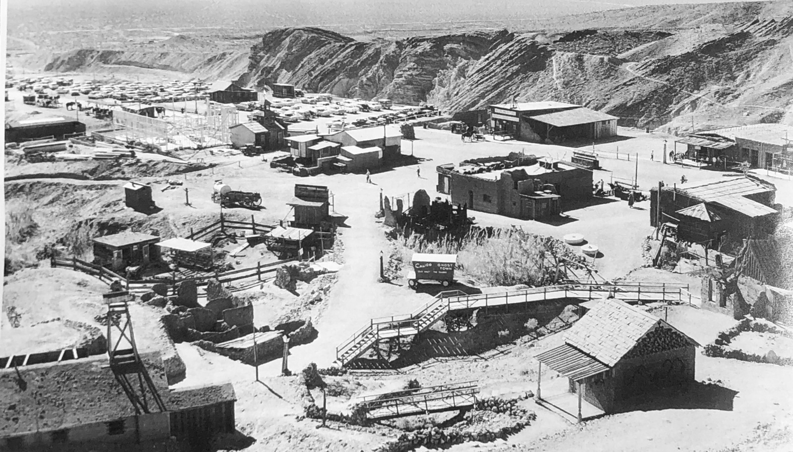

Hi Professor, here is what we covered
This is from the 2019 CSUSB geology field camp led by Dr. Erik Melchiorre. A handheld GeoSLAM scanner surveyed the Silver King Mine tunnel in the Calico Hills on 24 March 2019. Mike Murrey processed the scan and rendered the walkthrough. About 13.7 million measured points are in the model. The colours are artistic, not true colour — the scanner recorded shape only.
Maps and measurements

Side profile at true scale (1 ft across = 1 ft up), in three stacked panels.
- Main drift
- 372 ft (113.2 m)
- Route to the northwest end
- 459 ft (140 m); about 422 ft straight, N3°E
- Typical section
- 3.9 ft × 6.6 ft (1.2 × 2.0 m)
- Lowest headroom
- 4.7 ft (1.43 m) at about 119 ft (low zone 112–122 ft)
- Volume
- about 450 m³ (16,000 ft³) ±15%
Then and now


Elevated view over the Calico buildings toward the tilted rock ridge and the valley beyond. Drag the full set on the next page.
Open the Then and Now slider